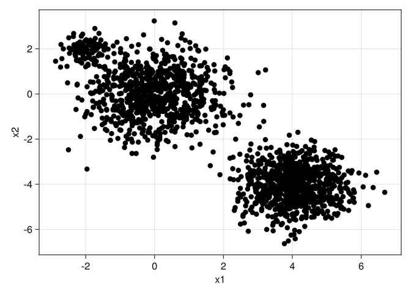
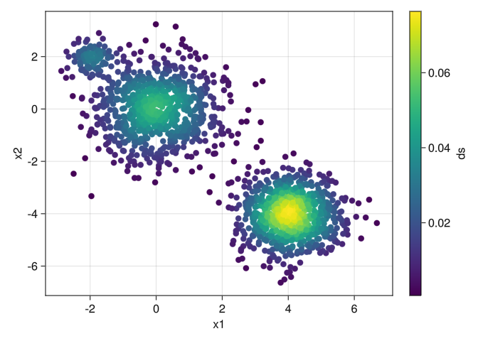
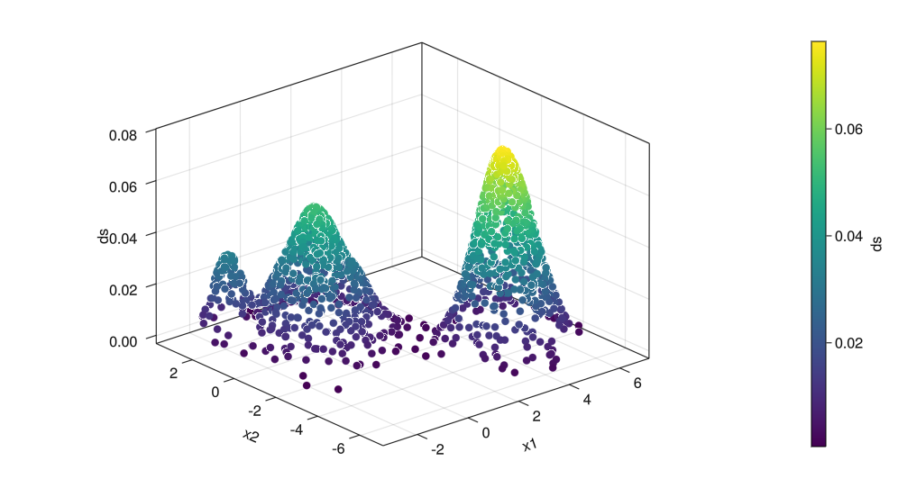
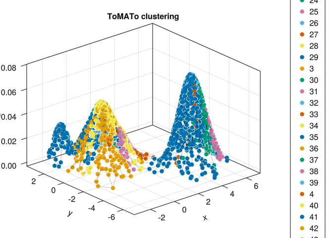
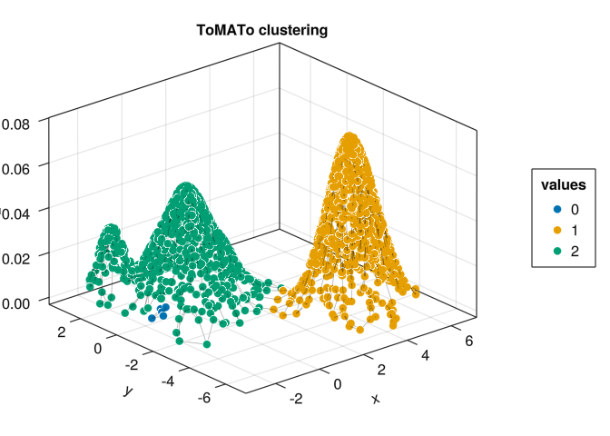
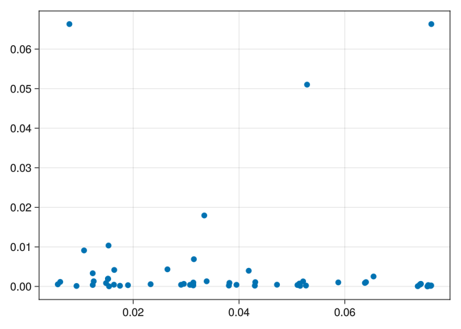
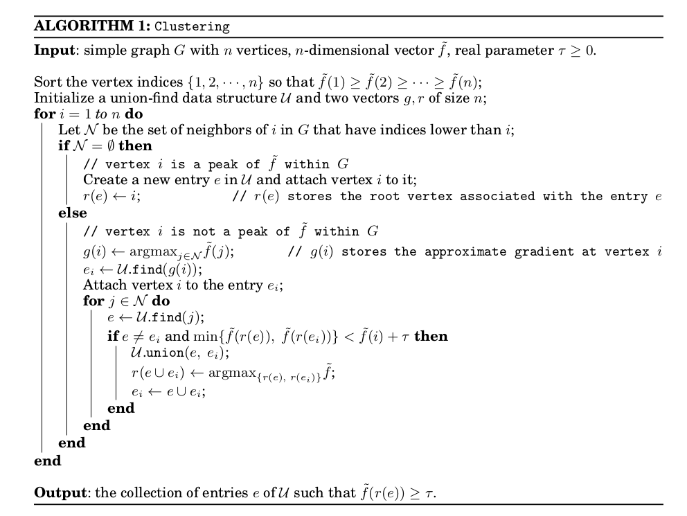

using ToMATo
import GeometricDatasets as gd
using AlgebraOfGraphics,
# CairoMakie,
GLMakie;5 Clustering
Clusterings are very useful in data analysis to group data into subsets such that points within each cluster are more “alike” (in some sense) than points in different clusters. Let’s formalise it.
Definition 5.1 A clustering of a set \(X\) is a collection \(C_1, \ldots, C_n \subset X\) such that \(\cup C_i = X\) and \(C_i \cap C_j = \emptyset\), for any \(i, j\). In other words: it is a disjoint covering of \(X\). Each \(C_i\) is called a cluster of \(X\).
A clustering method is a function \(f: X \to \mathbb{N}\) that associates each point \(x \in X\) with its clusters \(f(x)\).
There are several famous clustering methods such as [citar]. We will focus on the ToMATo algorithm, which uses tools from topology.
5.1 ToMATo
Given a pointcloud \(X\), how topology can help us in creating clusters?
Let’s understand the ToMATo algorithm with an example and pretend we are actually inventing it. How fun!
Let’s load some packages first
Suppose \(X\) is the following dataset:
X = hcat(randn(2, 800), randn(2, 800) .* 0.8 .+ (4, -4), randn(2, 100) .* 0.3 .- (2, -2))
df = (x1 = X[1, :], x2 = X[2, :])
plt = data(df) * mapping(:x1, :x2)
draw(plt)
We can see two big clusters and possibly a small one.
Let’s make a note-so-absurd supposition that our data is generated by some normal distribuitions (in our case, it really is; in general this can be false). Then, intuitively, the mean of each distribution is the point with the highest density, ie, with more points close to it, because it is in the center of the distribution.
5.1.1 Density
We can estimate the density of a dataset as follows
ds = gd.density_estimation(X, h = 0.5)
df = (x1 = X[1, :], x2 = X[2, :], ds = ds)
plt = data(df) * mapping(:x1, :x2, color = :ds)
draw(plt)
The precise definition of the density of a point \(x \in X\) is
\[ \text{dens}(x) = \dfrac{1}{|X|} \cdot \sum_{y \in X} \text{exp} \left(-\dfrac{d(x, y)^2}{h^2} \right) \]
where \(\text{exp}(x) = e^x\). Informally, we want that points close (ie. small distance) to many other points have a high density; this is way we calculate the distance from \(x\) to \(y\) and put it inside an exponential with a minus sign. We then calculate the mean of all these values.
Now we put this density estimation on another axis and plot it
axis = (type = Axis3, width = 800, height = 450)
df = (x1 = X[1, :], x2 = X[2, :], ds = ds)
plt = data(df) * mapping(:x1, :x2, :ds, color = :ds)
draw(plt; axis = axis)
Good!
5.1.2 Climbing mount topology
The idea now is that given a point \(x\):
- if \(x\) is the highest point in its corresponding mountain, then it is a new cluster;
- otherwise, we will we seek for the highest neighbor of \(x\), say \(x'\) and say that the cluster of \(x\) is the same of \(x'\).
To do that, we need to define a notion of “neighborhood” in this dataset. The easiest way is to define a graph whose vertex set is \(X\) and edges connect neighbor points. Fortunately, the ToMATo package has a function that does exactly that. You are welcome!
g = proximity_graph(X, 0.2, max_k_ball = 4, k_nn = 3, min_k_ball = 2){1700, 4793} undirected simple Int64 graphThe graph \(g\) above is constructed as follows: given \(x \in X\), we create a ball with radius \(0.2\) around \(X\) and do the following:
- Are there less than 2 points in the ball? If yes, then we connect \(x\) to its 2 closest points; if no, we connect \(x\) to its 6 (at maximum) closest points in the ball. In short: if the ball has not the amount of points we stipulated, then we use knn search.
These numbers obviously are arbitrary and can be changed at will.
Let’s see the result of our algorithm:
X2 = vcat(X, ds')
clusters, _ = tomato(X, g, ds, 0)
fig, ax, plt = graph_plot(X2, g, clusters .|> string)
fig┌ Warning: Axis got passed, but also axis attributes. Ignoring axis attributes (type = Axis3, width = 600, height = 600).
└ @ AlgebraOfGraphics ~/.julia/packages/AlgebraOfGraphics/yhdjr/src/draw.jl:19
Look how many clusters! This is obviously wrong.
5.1.3 The Comedy of Errors
This tragedy happened because we did not take into account the “false peaks”: peaks that are just a little slump (!!!) and not a real peak. To merge these false-peaks into the big ones, we need to add the following step:
Let \(\tau\) be a number that denotes how small a slump must be to be merged (we will show how to calculate \(\tau\) below). Given \(x \in X\), let \(N\) be the set of its neighbors higher than \(x\). Denote by \(x_max\) the highest point in \(N\), and \(c_max\) its cluster. Now, for each \(y \in N\), ask the following:
- Is the difference of heights of \(x\) and \(y\) less than \(\tau\)? If yes, we merge the cluster of \(y\) with the cluster of \(x_max\). Otherwise, do nothing.
τ = 0.02
clusters, _ = tomato(X, g, ds, τ, max_cluster_height = τ)
X2 = vcat(X, ds')
fig, ax, plt = graph_plot(X2, g, clusters .|> string)
fig┌ Warning: Axis got passed, but also axis attributes. Ignoring axis attributes (type = Axis3, width = 600, height = 600).
└ @ AlgebraOfGraphics ~/.julia/packages/AlgebraOfGraphics/yhdjr/src/draw.jl:19
Now we got something!
But how did we calculate this magic \(\tau\)? Should we just go on guessing real numbers? I hope not!
We usually run the ToMATo algorithm twice. The first time, we put \(\tau = \inf\) and see how the montains of \(X\) merged: we plot the time each one of these mountains survived.
_, births_and_deaths = tomato(X, g, ds, Inf)
plot_births_and_deaths(births_and_deaths)
Choosing a bigger \(\tau\) (say 0.04) will also merge the small clusters on the left
τ = 0.04
clusters, _ = tomato(X, g, ds, τ, max_cluster_height = τ)
X2 = vcat(X, ds')
fig, ax, plt = graph_plot(X2, g, clusters .|> string)
fig┌ Warning: Axis got passed, but also axis attributes. Ignoring axis attributes (type = Axis3, width = 600, height = 600).
└ @ AlgebraOfGraphics ~/.julia/packages/AlgebraOfGraphics/yhdjr/src/draw.jl:19
At the end of the day you will still need to define how bigger a slump you can accept before merging it.
5.1.4 The formal algorithm
After all this talk, maybe the original algorithm can be better understood

For the curious reader, the math above is easily translated to Julia
function tomato(
X::PointCloud, g::Graph, ds::Vector{<:Real}, τ::Real = Inf;
max_cluster_height::Real = 0
)
sorted_ids = sortperm(ds, rev = true)
clusters = zeros(Int64, size(X)[2])
births_and_deaths = Dict{Int64, Vector{<: Real}}()
for i ∈ sorted_ids
N = neighbors(g, i) |> copy
filter!(x -> ds[x] > ds[i], N)
# if there is no upper-neighbor
if length(N) == 0
clusters[i] = i
births_and_deaths[i] = [ds[i], Inf]
continue
end
c_max = clusters[argmax(x -> ds[x], N)]
clusters[i] = c_max
for j ∈ N
c_j = clusters[j]
# if the clusters are equal, skip
c_max == c_j && continue
# if c_j has no cluster, put j on c_max
if c_j == 0
update_cluster!(clusters, j, c_max)
continue
end
# If the lowest of them is just a bit below the current height ds[i],
# we merge the clusters
if min(ds[c_max], ds[c_j]) < ds[i] + τ
from, to = sort([c_max, c_j], by = x -> ds[x])
births_and_deaths[from][2] = ds[i]
replace!(clusters, from => to)
end
end
end
sorted_clusters = sort(clusters |> unique, by = x -> ds[x], rev = true)
cluster_dict =
map(sorted_clusters) do cl
if (ds[cl] < max_cluster_height)
true_number = 0
else
true_number = findfirst(x -> x == cl, sorted_clusters)
end
Dict(cl => true_number)
end
cluster_dict = merge(cluster_dict...)
final_clusters = replace(clusters, cluster_dict...)
return final_clusters, births_and_deaths
end5.2 Datasets
The datasets are taken from (Ultsch and Lötsch 2020)